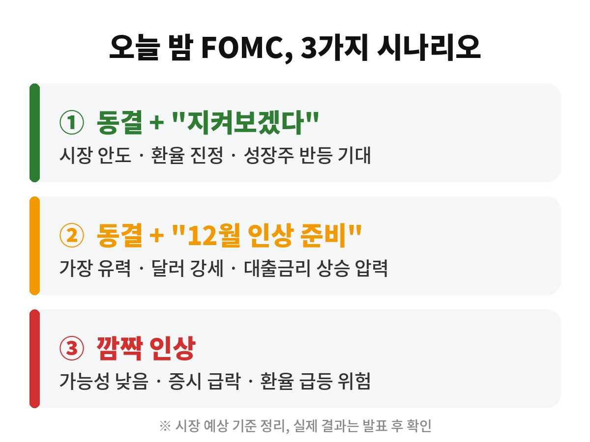
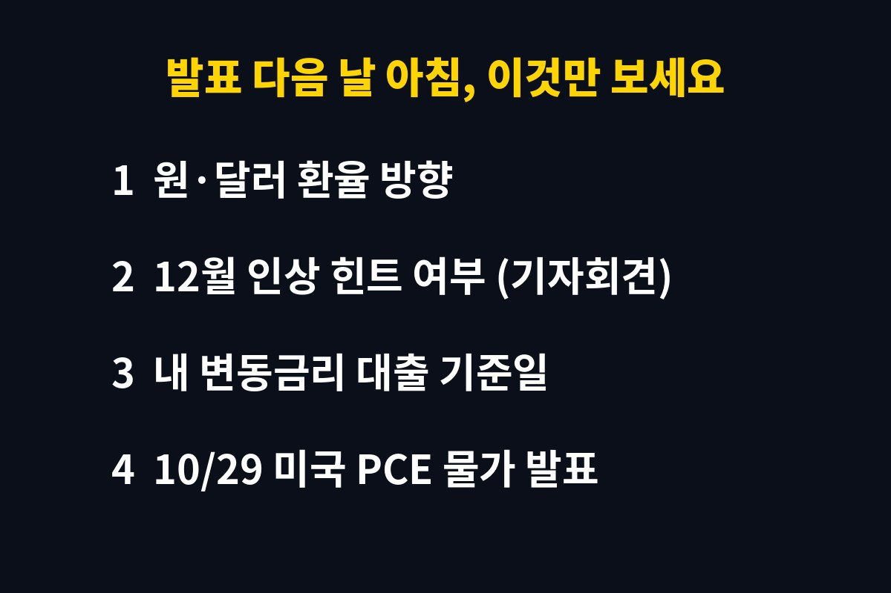

솔직히 "FOMC"라는 단어만 나와도 눈이 감기는 분들 많으시죠. 그런데 이번 건 좀 다릅니다. 한국 시간으로 내일(10월 29일) 새벽 3시, 미국 연준이 금리를 발표하는데요. 이 발표 하나에 환율, 주식, 그리고 우리 대출이자까지 줄줄이 흔들릴 수 있거든요.
출근길 5분이면 다 읽히게 정리했습니다. 딱 필요한 것만 볼게요.
현재 미국 기준금리는 3.75~4.00%입니다. 눈여겨볼 건 방향이에요. 연준은 지난 9월, 2023년 이후 처음으로 금리를 다시 올렸습니다. 한동안 "이제 내리는 일만 남았다"던 분위기가 완전히 뒤집힌 거죠.
이번 회의는 케빈 워시 의장이 이끄는 회의라 기자회견 한마디 한마디에 시장이 예민하게 반응하고 있습니다.
CME 페드워치 기준으로 이번 달 동결 확률은 90% 수준입니다. 여기까지만 보면 별일 없을 것 같죠?
문제는 12월입니다. 해외 증권사 중에는 "10월은 쉬고 12월에 다시 올린다"고 보는 곳이 적지 않아요. 국내 증권가에서도 이번 동결은 인상이 끝났다는 뜻이 아니라, 그동안 올린 효과를 점검하는 '숨 고르기'에 가깝다는 분석이 나옵니다. 이른바 '매파적 동결'이죠.

① 대출이자
미국이 "12월에 또 올릴 수 있다"는 신호를 주면 시장금리가 먼저 움직입니다. 변동금리 대출을 쓰고 계신다면 다음 금리 조정일이 언제인지 오늘 한 번 확인해 두세요. 은행 앱에서 1분이면 보입니다.
② 환율
미국 금리가 높게 유지되면 달러 몸값이 올라갑니다. 연말 해외여행이나 직구 계획이 있다면, 발표 직후 환율 흐름을 보고 환전 타이밍을 잡는 게 유리할 수 있어요.
③ 주식
지난주 메타는 실적 실망으로 하루에 9% 넘게 빠졌습니다. 금리 부담에 실적 시즌까지 겹치면서 시장이 꽤 예민해진 상태예요. 이번 주에는 마이크로소프트·알파벳(28일), 아마존(29일) 실적도 줄줄이 나옵니다.
진짜 2차전은 29일입니다. 미국 9월 PCE 물가와 3분기 GDP가 같은 날 나오거든요. 연준이 가장 중요하게 보는 물가가 PCE인데, 근원 물가가 예상(전월 대비 +0.3%)보다 높게 나오면 12월 인상 얘기에 확 불이 붙을 수 있습니다.
여기에 11월 3일 미국 중간선거까지 앞두고 있어서, 당분간은 뉴스 한 줄에 시장이 출렁이는 장세가 이어질 가능성이 높아요.

이번 FOMC는 "금리를 올리느냐"보다 "12월에 또 올릴 거라고 말하느냐"가 핵심입니다. 내일 아침 뉴스에서 '12월'이라는 단어가 어떤 뉘앙스로 나오는지만 체크해도, 남들보다 한발 빠르게 움직일 수 있어요.
발표 결과가 나오면 바로 이어서 정리해 드릴게요. 놓치기 싫으시면 구독 눌러두시면 됩니다. 🙌
※ 본 글은 공개된 기사와 시장 전망을 바탕으로 정리한 정보이며, 특정 금융상품의 매수·매도를 권유하지 않습니다. 실제 결과는 발표 후 확인해 주세요.